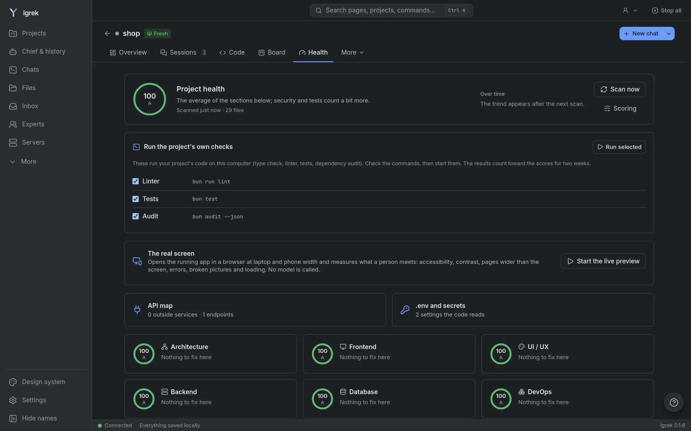
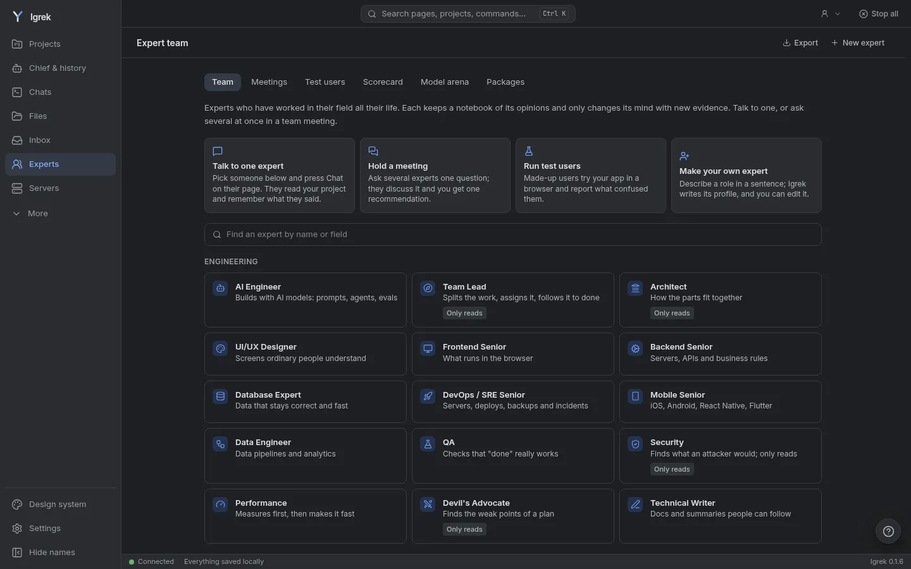

Your AI agents, explained.
Igrek sits on top of Claude Code and Codex on your own computer. It remembers your projects, keeps private details out of the AI's reach, and shows why every file changed.
Free. No account, no API keys, no telemetry. Linux, macOS and Windows.

What it does
What one agent alone does not do
Claude Code and Codex write the code. Igrek is the layer around them: memory, privacy, many projects at once, and a clear picture of what happened.
Why did this change?
Next to every changed file: the request that led to it, the plan step it belongs to, and the expert's note.
One place to start
"What do you want to do?" goes to the right project, or to several at once, each in its own copy.
Health, with a fix button
Architecture, security, tests and dependencies scored; most findings fixed in one click, the rest by the right expert.
Private by design
Salaries, IBANs, IDs and .env secrets become placeholders before anything reaches the model.
Thirty experts on call
Security, database, architecture and more: read-only reviewers that know their field.
Memory that lasts
Decisions and mistakes are kept per project and put in front of the AI before similar work. Claude and Codex read the same rules.
How it works
Three steps, then it just runs
Install
Download the app for your computer (about 17 MB). The first start fetches its runtime once.
Add your projects
Pick the folders you work in. Igrek finds the ones Claude already worked in.
Ask
Type what you want. Igrek picks the project, a way of working, and shows every step.
Yours
It runs on your computer
Igrek uses the AI logins you already have, so there is nothing new to pay for. Nothing is sent to us: no telemetry, no account, and every address Igrek opens on the internet is listed in its Settings.
- Your Claude and Codex subscriptions, no API keys
- Private details hidden from the model, filled back in on your side
- A file that tells AI to stop is shown to you, and you decide
- Pushing, deploying and publishing always wait for your OK

Download
Get Igrek
Signed updates, installed by Igrek itself. Claude Code or Codex is needed too; Igrek shows how to install them on its first start.
Questions
Is it free?
Yes. Igrek is free to install and use, for people and companies. It uses your own Claude or Codex plan, and the ones that call a model are marked so you see what uses your limit.
Does my code leave my computer?
Only to the AI you already use, the way Claude Code and Codex send it. Igrek adds nothing on top: no telemetry, no server of ours. Private details are replaced by placeholders first.
Why does the first start download something?
Igrek's server runs on Bun. To keep the installer small, the app downloads Bun's official release once (about 35 MB), checks it against Bun's published checksum and keeps it.
Is it open source?
The source is open to read, but it is not open source: the Igrek Use License lets anyone use it for free, while selling it, redistributing it or offering it as a service needs written permission.